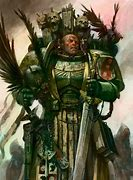
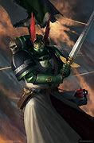

Characters
Grand masters
The Dark Angels have a lot more characters than almost any other Space Marines Chapter in Warhammer 40k (except perhaps the Ultramarines), there are a multitude of Dark Angels characters with models on the tabletop as well. Each Grand master of the Dark Angels wing play an important role in their legion wether that be interrigation, fast vehicles, terminators, and more. while they are not as powerful as their primarch The Lion they should not be underestermated for their skill and strategy.
Some key aspects of the Dark Angels legion is that they have a very knights of the round table look to them with things like robes, hoods, and swords. another key thing about the legion is their secrecey and wanting to hold knowledge, even from their allies. To the Dark Angels startegy is a key value for winning wars and having a stable empire. and thats what seperates them from other legions. but their secrecey is also the reason why they are a very paranoid legion with having traitors within their own legion and no one besides the Dark Angels know about them and they want hunt their own traitors down and expunge all knowledge of them from existance.
 